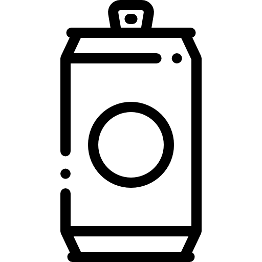

Negra
Cerveza pura malta
La Andes Origen Negra es un gustito de cuerpo intenso y color negro profundo. Que tenga malta tostada no es algo para pasar por alto, se siente en el sabor y en el aroma, donde también puede identificar algo de lúpulo.
Para completar el disfrute en su boca, se va a sorprender con un sabor armonioso, una leve acidez y un suave dulzor para compensar el amargor. Tómela en copa, ¡qué la disfrute!
Alcohol
5,3 %Amargo
20 IBUColor
110 EBC
Estilo: Schwarzbier.
Escuela cervecera: Alemana.
Ingredientes: Agua, Malta de Cebada, Lúpulo
Maltas: Pilsen (argentina), Munich (argentina), Tostada (argentina)
Lúpulos: Cascade (argentina), Zeus (EEUU)
Levadura: Lager

Porrón
340cc- 
Lata
473cc Botella
1l